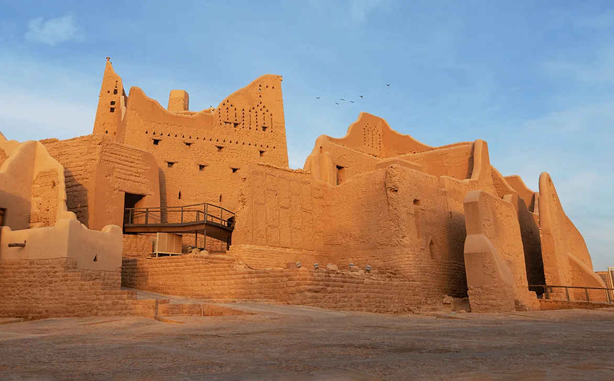

Foundations of the Kingdom
The roots of a great nation
When Was the First Saudi State Founded?
The First Saudi State was established in 1139 AH / 1727 AD in the city of Diriyah, located in the heart of the Arabian Peninsula in the Najd region. This historic event marked the beginning of a continuous political and civilizational legacy that spans nearly three centuries.
Who Is the Founder?
The founder of the First Saudi State is Imam Muhammad bin Saud Al Muqrin (died 1765 AD). He was the Emir of Diriyah who, on February 22, 1727, assumed leadership and forged a historic alliance with the Islamic scholar Sheikh Muhammad ibn Abd al-Wahhab, combining political authority with religious reform to build a strong and unified state.
Core Founding Values
The state was founded on the principles of Islam, with the Holy Quran and the Sunnah as its constitution.
Upholding justice among all citizens and establishing fair governance as a cornerstone of the state.
Unifying the tribes and regions of the Arabian Peninsula under one banner and one leadership.
Providing safety and security for all citizens as a fundamental duty of the state.
